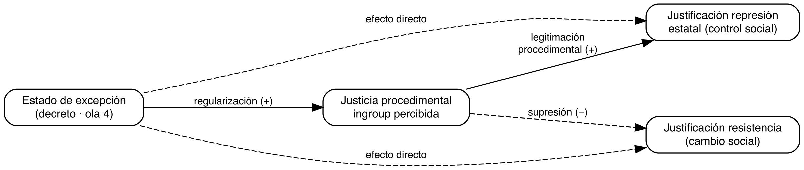
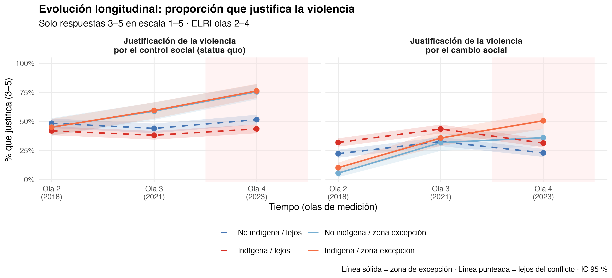
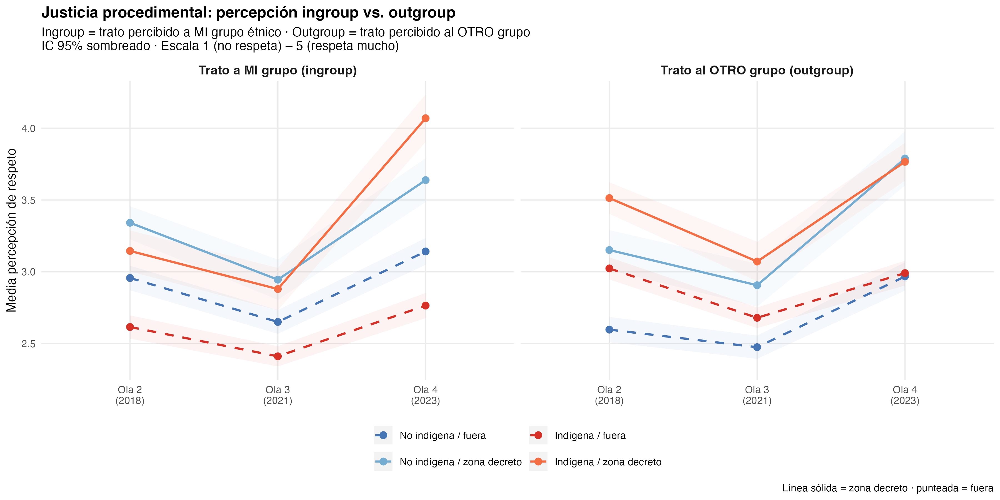
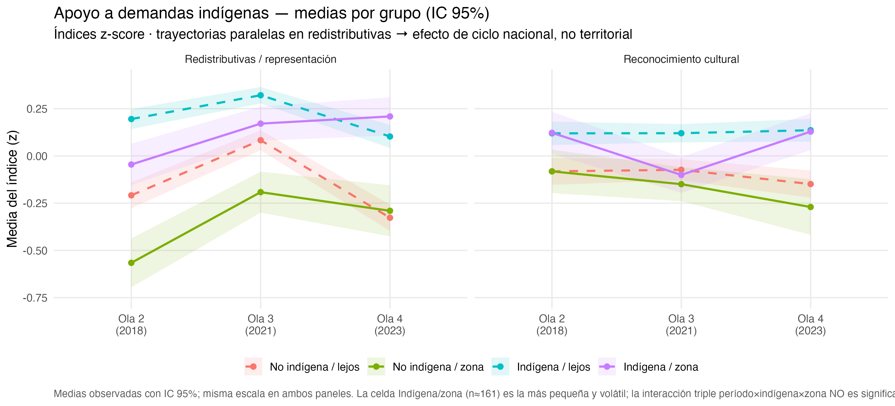
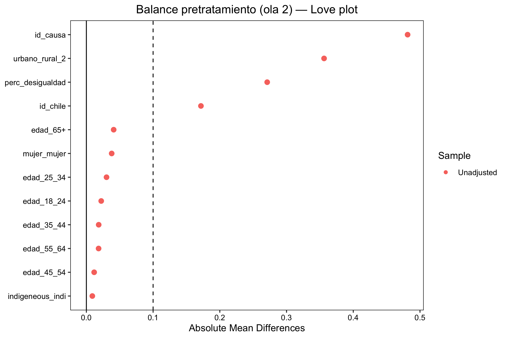
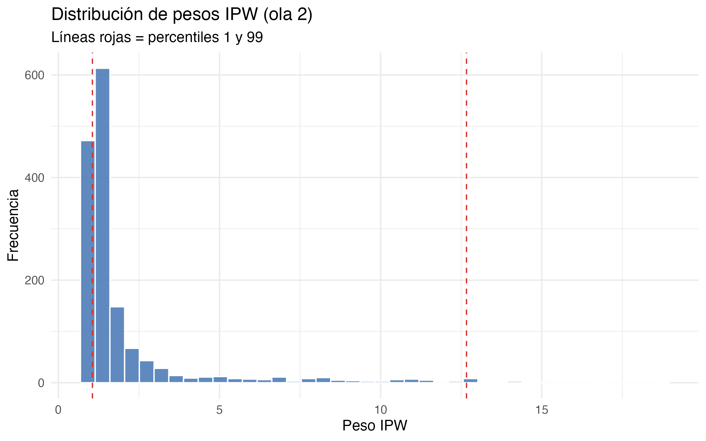
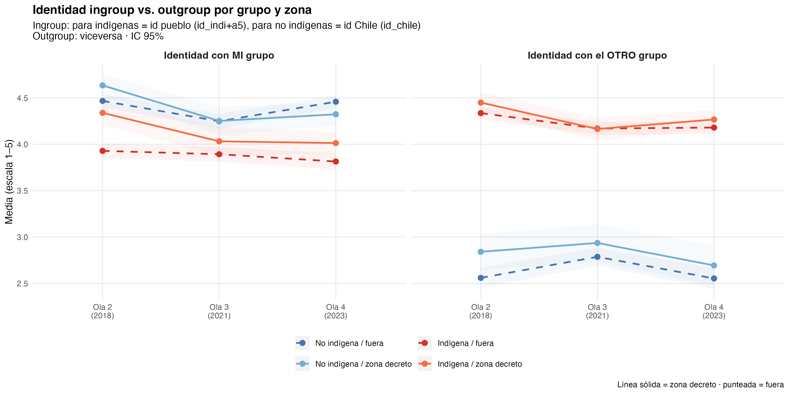

Apertura normativa y contención fallida: estallido social, estado de excepción y justificación de la violencia entre personas indígenas y no indígenas en Chile (2018–2023)
Resumen
¿Cómo reconfigura una intervención coercitiva territorial —un estado de excepción constitucional— las actitudes hacia la violencia y hacia las demandas de un grupo étnico en conflicto? Con el panel intercultural ELRI (N = 1.580; olas 2018, 2021 y 2023) y un diseño de diferencias-en-diferencias de triple interacción (período × identidad indígena × zona de excepción), estimado con efectos fijos individuales y errores agrupados por comuna, y contrastado con un estimador doblemente robusto (Sant’Anna & Zhao, 2020), documentamos un arco de tres momentos. Primero, la apertura del ciclo de politización (2019–2021) elevó la justificación de la violencia de protesta a escala nacional, sin diferencial territorial. Segundo, el estado de excepción decretado en octubre de 2021 (D.S. 418) produjo un aumento territorial de la justificación de la violencia —fuerte y común a indígenas y no indígenas residentes en la zona—, sobre el que se superpone un diferencial étnico que es robusto para la violencia de resguardo o protesta disruptiva (β = 0,494, p = ,009) y frágil para la de control estatal (β = 0,298, p = ,153). Tercero, el decreto mejoró la percepción de justicia procedimental hacia el propio grupo (β = 0,602, p = < .001), lo que sugiere una reconfiguración de la relación con la fuerza estatal más que una mera radicalización. Una extensión clave arroja un nulo informativo: el decreto no alteró diferencialmente el apoyo a las demandas indígenas —redistributivas o culturales—, cuya variación sigue el ciclo político nacional. La coerción territorial, entonces, endureció la justificación de la resistencia sin desmovilizar la demanda: dos planos actitudinales que se desacoplan.
Palabras clave: conflicto mapuche, estado de excepción, justificación de la violencia, justicia procedimental, diferencias en diferencias, efecto territorial
1 Introducción
El conflicto entre el Estado chileno y el pueblo mapuche tiene raíces históricas profundas que se remontan a la ocupación militar de la Araucanía a fines del siglo XIX y a un proceso sostenido de usurpación territorial (Bengoa, 2002). Desde mediados de los 2000 el conflicto se ha intensificado: la militarización de la Macrozona Sur, los enfrentamientos entre comunidades indígenas y fuerzas policiales, y las diversas formas de resistencia territorial mapuche conforman un escenario de tensión crónica. Las desigualdades estructurales que subyacen a esa tensión —en acceso a tierra, reconocimiento político y condiciones socioeconómicas— han sido ampliamente documentadas (Richards, 2013), pero la relación entre las intervenciones coercitivas del Estado y las actitudes de la población civil hacia la violencia permanece como un vacío analítico relevante. ¿Cómo responden las personas —indígenas y no indígenas, cercanas y lejanas al conflicto— cuando el Estado institucionaliza la coerción en su territorio?
Esta pregunta adquirió una urgencia nueva entre 2018 y 2023, período en que la población chilena experimentó una secuencia de shocks políticos con potencial de alterar las actitudes hacia la violencia de formas contradictorias. El 18 de octubre de 2019 se iniciaron las protestas masivas conocidas como el estallido social, un ciclo de movilización que desbordó las demandas socioeconómicas iniciales para incorporar reivindicaciones históricas de los pueblos indígenas, el rechazo a la represión policial y un cuestionamiento generalizado a la legitimidad del orden institucional. En ese proceso la violencia se politizó como recurso de transformación: actos antes considerados inaceptables —barricadas, enfrentamientos con la policía, destrucción de infraestructura— adquirieron un grado de legitimidad discursiva sin precedentes en la historia reciente del país. Esta apertura normativa no fue exclusiva del conflicto mapuche ni de un territorio particular; fue un fenómeno nacional que reconfiguró los límites de lo que amplios segmentos de la población consideraban justificable.
La respuesta institucional al estallido abrió, inicialmente, un canal de transformación política. En octubre de 2020, el plebiscito de entrada por una nueva constitución ganó con cerca del 78% de apoyo. En 2021, la elección de la Convención Constitucional incluyó por primera vez escaños reservados para pueblos indígenas, otorgando representación institucional a demandas históricamente excluidas. Sin embargo, la violencia en las zonas con mayor concentración de población indígena no cesó: ataques incendiarios, tomas de terreno y enfrentamientos con fuerzas policiales continuaron y, en algunos casos, se intensificaron durante 2021. La presión política resultante derivó en una respuesta coercitiva directa: el 12 de octubre de 2021 el gobierno decretó el estado de excepción constitucional de emergencia para la Macrozona Sur, institucionalizando la presencia militar en 53 comunas de las provincias de Cautín y Malleco (La Araucanía) y Arauco y Biobío (región del Biobío). A diferencia de la represión puntual y reactiva del estallido, este decreto constituyó un dispositivo de coerción institucionalizada: presencia militar permanente, con protocolos de operación formales y una duración que, con sucesivas prórrogas, se extiende hasta el presente.
El cierre del ciclo político completó la secuencia. En septiembre de 2022, el plebiscito de salida rechazó la propuesta constitucional con el 62% de los votos, clausurando el canal institucional de cambio que el estallido había abierto. La población de la zona de conflicto quedó, así, en una doble clausura: la coerción sostenida del estado de excepción por un lado, y la ausencia de alternativas institucionales de transformación por otro. Esta configuración —coerción institucionalizada más cierre del canal institucional— define el contexto en que se levantó la ola 4 de ELRI (2023) y constituye el escenario natural de este estudio.
Estudios previos han comenzado a explorar los efectos actitudinales de la represión policial en Chile. En el contexto específico del conflicto mapuche, Gerber et al. (2018) establecieron, mediante un diseño transversal con población mapuche, que la percepción de justicia procedimental hacia Carabineros predice la legitimidad institucional atribuida a la policía y, a través de ella, tanto la aceptación de la violencia policial de orden como la justificación de la violencia colectiva de resistencia. En población general durante el estallido, Disi Pavlic et al. (2025) mostró, con el panel ELSOC y un diseño de diferencias-en-diferencias doblemente robusto, que la exposición directa a protestas con represión policial activa aumentó la justificación de violencia contra la policía. El estado actual del conocimiento presenta, sin embargo, tres limitaciones que este artículo aborda simultáneamente.
Primero, permanece inexplorado si esos efectos son homogéneos entre grupos étnicos —particularmente entre indígenas y no indígenas, cuyas experiencias históricas y contemporáneas con la coerción estatal son estructuralmente distintas—. Segundo, no se sabe si persisten o se transforman cuando la represión se institucionaliza en un territorio mediante un decreto prolongado, ni cómo esa institucionalización altera el cálculo de legitimidad. Tercero, aunque Gerber et al. (2018) identificaron la justicia procedimental como mecanismo, su enfoque transversal no permitió ordenar temporalmente el shock coercitivo, el cambio en la percepción de procedimiento y la actitud hacia la violencia —una limitación que un diseño longitudinal con mediadores rezagados puede mitigar—.
La pregunta que guía el artículo es: ¿en qué medida el estallido social y el período del estado de excepción se asocian con cambios diferenciales en la justificación de la violencia entre personas indígenas y no indígenas, según su cercanía territorial al conflicto, y qué papel cumple la percepción de justicia procedimental? Distinguimos, además, dos objetos actitudinales que la literatura suele confundir: la justificación de la violencia y el apoyo a las demandas indígenas.
Nuestra contribución es articular un arco de tres momentos que separa lo nacional de lo territorial y, dentro de lo actitudinal, la violencia de las demandas. Primero, el estallido operó como apertura normativa nacional: elevó la justificación de la protesta disruptiva de forma transversal, sin diferencial territorial. Segundo, el estado de excepción operó como intervención territorial: aumentó la justificación de la violencia entre los residentes de la zona —de manera común a ambos grupos étnicos—, con un componente diferencial que endurece sobre todo la resistencia y, más débilmente, la aceptación de la coerción estatal. Tercero, ese endurecimiento coexiste con una mejora en la percepción de justicia procedimental hacia el propio grupo, lo que sugiere una reconfiguración de la relación con la fuerza estatal antes que una radicalización unívoca. Frente a la intuición de que la securitización desmoviliza, hallamos un desacople de planos: el decreto reconfiguró la violencia justificada pero no el apoyo a las demandas, cuya variación siguió el ciclo político nacional. En una frase: apertura nacional → decreto territorial que endurece la justificación de la resistencia (y débilmente la de la coerción estatal) mediante una reconfiguración de la justicia procedimental → sin colapso territorial del apoyo a las demandas.
El artículo se organiza así: Sección 2 presenta el marco teórico y las hipótesis; Sección 3 y Sección 3.2 describen el panel ELRI y la estrategia cuasi-experimental; las secciones cuarta a séptima desarrollan los cuatro bloques empíricos (apertura nacional, reconfiguración territorial, mecanismo procedimental y desacople de demandas) y la robustez; Sección 8, Sección 8.1 y Sección 9 cierran el manuscrito. El detalle técnico figura en el Apéndice.
2 Marco teórico e hipótesis
Entre 2018 y 2023, la justificación de la violencia se movió en Chile de maneras que admiten dos explicaciones causales rivales. Una atribuye el cambio al ciclo de protesta: el estallido social de 2019 habría abierto, a escala nacional, los límites normativos de lo justificable, arrastrando por igual a toda la población (González, 2020; Somma et al., 2021). La otra lo atribuye a la violencia ejercida por el propio Estado: la coerción desplegada sobre territorios específicos —culminando en el estado de excepción de 2021— habría reconfigurado las actitudes de quienes la vivieron directamente (Curtice, 2021; Gerber et al., 2018). Este artículo trata ambas como hipótesis competidoras sobre el mismo fenómeno y muestra que el diseño permite separarlas, porque cada fuente deja una firma empírica distinta.
2.1 Dos fuentes de cambio actitudinal y sus firmas
La distinción clave es de alcance. Si el cambio proviene del ciclo nacional, debe manifestarse como un efecto de período: sube (o baja) para todos los grupos —indígenas y no indígenas, dentro y fuera de la zona de conflicto— porque el clima político no discrimina por territorio. En un diseño de diferencias-en-diferencias, esa firma es un coeficiente de período significativo y una interacción triple (período × identidad × zona) nula.
Si el cambio proviene de la violencia estatal ejercida sobre el territorio, debe manifestarse como un efecto de zona: concentrado en quienes residen donde el Estado desplegó coerción directa, y potencialmente diferencial por identidad entre los expuestos. Su firma es un efecto de zona fuerte y una interacción triple distinta de cero. El diseño de este artículo se construye para leer ambas firmas por separado: el efecto de período capta la fuente nacional; el efecto de zona y la triple interacción captan la fuente territorial. La pregunta “¿ciclo o violencia estatal?” se responde, así, observando dónde se aloja el cambio.
2.2 Identidad social y evaluación de la violencia
La Teoría de Identidad Social sostiene que los individuos derivan parte de su autoconcepto de la pertenencia grupal, con favoritismo endogrupal y diferenciación exogrupal (Brewer, 2001; Tajfel, 1982; Tajfel & Turner, 1979); en conflicto activo, la saliencia identitaria polariza los juicios sobre la legitimidad de la violencia según membresía (Reicher, 2004). En el caso mapuche esto implica una evaluación espejo: mayor identificación con la causa indígena se asocia con más justificación de la resistencia y menos de la coerción estatal, y la identificación nacional con el patrón inverso. Tratamos esta estructura como una regularidad de base —verificable en los efectos principales de identidad sobre ambas variables dependientes— que enmarca, pero no constituye, el contraste causal del artículo. Su relevancia teórica es que hace plausible que una misma intervención estatal afecte de modo distinto a indígenas y no indígenas: por eso la fuente territorial puede dejar una firma diferencial (triple interacción) y no solo un efecto de zona común.
2.3 La fuente nacional: el ciclo de protesta como apertura normativa
La literatura sobre ciclos de protesta describe fases de ascenso, pico y declive de la movilización (Tarrow, 2011). El estallido de octubre de 2019 constituye el pico del ciclo chileno reciente: un desborde de las demandas socioeconómicas iniciales hacia un cuestionamiento generalizado del orden institucional, con un repertorio que combinó protesta pacífica masiva y violencia sostenida (González, 2020; Somma et al., 2021). En ese proceso la violencia se politizó como recurso de transformación, normalizándose discursivamente a una escala sin precedentes recientes. Esta apertura fue nacional —no específica de un territorio— y transversal a los grupos; cabe esperar, por tanto, que haya elevado la justificación de la protesta disruptiva como efecto de período, sin diferencial territorial.
H1 (fuente nacional — ciclo). La justificación de la violencia de cambio social aumentará entre la ola 2 (2018) y la ola 3 (2021) para la muestra en conjunto, como efecto de período de la apertura normativa; este aumento no será diferencial por identidad ni por zona (triple interacción nula).
2.4 La fuente territorial: los dos rostros de la violencia estatal
La violencia del Estado no es un objeto único. Conviene distinguir dos rostros que la literatura suele confundir. El primero es la represión difusa y reactiva: la fuerza policial desplegada contra protestas puntuales, geográficamente dispersa y ligada al ciclo de movilización. Durante el estallido, esta represión operó a escala nacional —causando miles de heridos (Somma et al., 2021)— y, en nuestro esquema, forma parte del clima del ciclo (fuente nacional): su huella es de período. El segundo es la coerción institucionalizada y territorial: un dispositivo legal que militariza un territorio de forma sostenida, con presencia permanente y protocolos formales. El estado de excepción decretado en octubre de 2021 sobre 53 comunas de la Macrozona Sur es la instancia paradigmática de este segundo rostro, y el que este artículo aísla como tratamiento.
Sobre los efectos actitudinales de la coerción, la literatura ofrece dos predicciones opuestas. La hipótesis de disuasión/normalización sostiene que la coerción sostenida normaliza el uso de la fuerza como recurso legítimo e induce obediencia (Davenport, 2007). La hipótesis de reacción contraria sostiene que la coerción radicaliza a la población afectada y aumenta la justificación de la violencia contra el Estado (Blattman, 2009; Francisco, 1995). Evidencia cuasi-experimental reciente respalda que la coerción estatal deteriora la relación de los ciudadanos con la fuerza pública: Curtice (2021), aprovechando la represión selectiva de una protesta ocurrida durante el trabajo de campo de una encuesta nacional en Uganda, muestra que la represión policial reduce la legitimidad atribuida a la policía y la percepción de que actúa con justicia procedimental, con efectos más intensos entre quienes se oponen al régimen. Ese patrón —análogo, en su estructura por lealtad política, a la distinción ingroup/outgroup que aquí abordamos por identidad étnica— sugiere que la coerción reconfigura la percepción de la fuerza estatal según la posición del individuo frente al poder.
Ambas predicciones implican un efecto territorial (de zona), pero de énfasis distinto según la actitud considerada: la reacción contraria debería dominar sobre la justificación de la resistencia (protesta disruptiva), mientras que sobre la aceptación de la coerción estatal disuasión y reacción compiten, anticipando un efecto más débil e inestable. De aquí se siguen dos predicciones territoriales, que son el núcleo del contraste con H1:
H2 (fuente territorial — efecto de la coerción estatal). El estado de excepción producirá un aumento de la justificación de la violencia concentrado en la zona militarizada, presente en ambos grupos étnicos (efecto de zona), por sobre y más allá del efecto de período nacional.
H3 (diferencial étnico de la coerción). El efecto territorial del decreto será mayor entre las personas indígenas expuestas (triple interacción período × indígena × zona), y asimétrico por tipo de violencia: robusto para la justificación de la resistencia (reacción contraria) y débil o inestable para la de la coerción estatal (competencia disuasión/reacción; Gerber & Jackson (2017)).
El decreto funciona aquí como un proxy datable y territorializado de la coerción estatal directa. No pretendemos aislar el efecto de un componente operativo específico (presencia militar, controles, allanamientos), sino estimar el efecto de vivir bajo coerción estatal institucionalizada, del que el D.S. 418 es la instancia observable. Esta estrategia distingue los dos rostros del Estado: la represión difusa y reactiva del ciclo —que en nuestro diseño entra como efecto nacional de período (fuente 1)— y la coerción territorial y sostenida del decreto —que opera como tratamiento diferenciado por zona (fuente 2)—. La contrapartida, que asumimos explícitamente, es que el proxy no separa la militarización del cierre institucional simultáneo (la derrota del Apruebo en septiembre de 2022): interpretamos el coeficiente como el efecto del período de coerción territorial, no del decreto en aislamiento (véase Sección 8.1).
2.5 El mecanismo: justicia procedimental y regularización
Si la coerción estatal territorial endurece la justificación de la violencia, ¿por qué vía lo hace? La teoría de la justicia procedimental vincula la percepción de trato justo por las instituciones con la legitimidad y el deber de obediencia (Tyler, 1990); en un conflicto interétnico, esa percepción se estructura en términos de ingroup y outgroup (Gerber et al., 2018). En Chile, la evidencia longitudinal reciente sostiene ese vínculo en el sentido esperado: Varela et al. (2025), con un panel posterior al estallido, muestra que una mayor percepción de justicia procedimental hacia la policía reduce la rabia y la justificación de la violencia de protesta en olas posteriores.
Ahora bien, esa evidencia —y la de Curtice (2021) y Gerber et al. (2018)— proviene de episodios de represión puntual, reactiva y arbitraria, donde el miedo generado deteriora la percepción de justicia procedimental. Nuestro caso difiere en un rasgo teóricamente decisivo: el estado de excepción instala una coerción institucionalizada, prolongada y con protocolos, cuya nota distintiva es la predictibilidad antes que la arbitrariedad. Si la justicia procedimental responde a la regularidad del procedimiento tanto como a su severidad (Tyler, 1990; Varela et al., 2025), cabe esperar que la coerción reglada produzca, sobre la percepción del trato al propio grupo, un efecto opuesto al de la represión reactiva: una mejora por regularización (de enfrentamientos episódicos a una presencia con reglas predecibles). Que nuestros resultados muestren un aumento de la justicia procedimental ingroup bajo militarización —frente al deterioro documentado para la represión episódica— delimitaría las condiciones (institucionalización vs. reactividad) bajo las cuales la coerción mejora o erosiona la percepción del trato.
H4 (mecanismo procedimental). El estado de excepción alterará la percepción de justicia procedimental ingroup entre las personas indígenas en zona de excepción (mejora por regularización). La precedencia temporal entre el cambio procedimental y la actitud hacia la violencia se evalúa de forma exploratoria; no se afirma un efecto indirecto causal identificado.
2.6 El alcance del efecto: violencia frente a demandas
Un supuesto extendido sobre la securitización es que la coerción territorial desmoviliza: reduciría no solo la violencia justificada sino también el apoyo a las demandas del grupo en conflicto. Distinguir ambos objetos permite acotar el alcance de la fuente territorial. Si el destino del apoyo a las demandas —redistributivas y culturales— se decide en el ciclo político nacional (auge en el proceso constituyente, caída tras el Rechazo) y no en la experiencia territorial de la coerción, entonces la violencia estatal reconfigura la violencia justificada pero no las demandas: los dos planos se desacoplan. Esta expectativa es coherente con la literatura de eventos y actitudes intergrupales, donde el efecto de un shock sobre la percepción del outgroup es contingente al contexto y no uniforme (Legewie, 2013).
H5 (desacople de demandas). El estado de excepción no alterará de forma diferencial (triple interacción) el apoyo a las demandas indígenas —redistributivas ni culturales—; su variación seguirá el ciclo nacional (firma de período, no de zona). Un resultado nulo, dimensionado por su efecto mínimo detectable, se interpreta como evidencia de desacople.
En conjunto, las cinco hipótesis ordenan el contraste central del artículo. H1 pone a prueba la fuente nacional (ciclo); H2 y H3, la fuente territorial (violencia estatal, con su firma de zona y su diferencial étnico asimétrico); H4 propone el mecanismo de regularización procedimental; y H5 delimita su alcance, separando la violencia justificada del apoyo a las demandas. Figura 1 resume este esquema (conceptual; no SEM ni mediación causal identificada).
3 Datos y diseño
3.1 El panel ELRI
La ELRI es un panel probabilístico con diseño espejo que entrevista en paralelo a muestras indígena y no indígena en Chile. Usamos las olas 2 (2018, línea base pre-estallido y pre-decreto), 3 (dic. 2020–may. 2021, posterior al estallido pero anterior al decreto) y 4 (2023, posterior al decreto y al cierre constituyente), reteniendo el panel balanceado (N = 1.580; 4.740 persona-olas). La ola 1 (2016) se usa únicamente en el placebo pretratamiento. La identidad étnica se construye desde la autoidentificación en ola 1 y se mantiene fija para evitar endogeneidad.
| Ola | Campo | Contexto histórico | Rol analítico |
|---|---|---|---|
| 1 | 2016 | Conflicto latente | Solo placebo |
| 2 | 2018 | Pre-estallido, pre-excepción | Baseline (t = 0) |
| 3 | Dic 2020 – May 2021 | Resabio estallido + pandemia | Tratamiento 1 (t = 1) |
| 4 | 2023 | Decreto prolongado + derrota Apruebo | Tratamiento 2 (t = 2) |
Nota crítica sobre el timeline: el D.S. 418/2021 fue firmado el 12 de octubre de 2021, cinco meses después del cierre del campo de la ola 3. La ola 3 captura el resabio del estallido social, no el estado de excepción. El análisis DiD compara la transición ola 2→3 (estallido, sin decreto) y la transición ola 3→4 (decreto + cierre constituyente). El coeficiente del decreto no identifica el D.S. en forma aislada: agrega coerción institucionalizada y clausura del proceso constituyente (2022).
3.2 Estimando y estrategia de identificación
El tratamiento es residir en una de las 53 comunas del D.S. 418. El estimando es el efecto territorial/contextual de vivir en zona militarizada, no una manipulación individual. La identificación descansa en el timing del decreto, decisión política nacional plausiblemente exógena a las actitudes individuales.
La especificación principal son efectos fijos individuales con errores estándar agrupados por comuna:
\[ Y_{it} = \sum_t \bigl(\beta_t \text{Período}_t + \theta_t (\text{Período}_t \times \text{Indígena}_i) + \delta_t (\text{Período}_t \times \text{Zona}_i) + \tau_t (\text{Período}_t \times \text{Indígena}_i \times \text{Zona}_i)\bigr) + u_i + \varepsilon_{it} \tag{1}\]
Con efectos fijos de individuo, los términos invariantes (identidad, zona y su interacción) se absorben; el coeficiente de interés es \(\tau_4\) (ola 4 × indígena × zona). Como especificación de sensibilidad estimamos un modelo multinivel de interceptos aleatorios con covariables de línea base; como contraste conservador, un estimador doblemente robusto (Sant’Anna & Zhao, 2020) aplicado por grupo étnico, cuyo \(\Delta\)ATT (ATT indígena − ATT no indígena) aproxima la triple diferencia.
3.3 Variables dependientes
Para preservar la validez de contenido, cada dimensión se mide con un ítem único. Violencia de control estatal = justificación del uso de fuerza por Carabineros (d3_1), que capta coerción estatal sin contaminarla con vigilantismo privado. Violencia de cambio social/resguardo = justificación de cortes de camino (d4_3), táctica de protesta disruptiva, sin mezclarla con la ocupación territorial. Ambas en escala 1–5. Los ítems de vigilantismo (d3_2) y ocupación de tierras (d4_2) se reservan como sensibilidad (Apéndice A7).
3.4 Covariables y estadísticos descriptivos
Covariables en línea base (ola 2): sexo, edad, zona urbano/rural, identificación con Chile, identificación con la causa indígena, percepción de desigualdad y apoyo a movilizaciones. Se aplicó una regla de eliminación de covariables con más de 5% de valores perdidos, que descartó una covariable (malestar diferencial, ~60% perdido) sin afectar el N de individuos.
Tabla 2 presenta las características sociodemográficas en baseline; Tabla 3 resume las variables principales por período e identidad.
| Variable | Overall N = 1,5801 |
Identidad étnica
|
p-value2 | |
|---|---|---|---|---|
| no_indi N = 7351 |
indi N = 8451 |
|||
| Sexo (mujer) | 0.7 | |||
| hombre | 467 (30%) | 221 (30%) | 246 (29%) | |
| mujer | 1,113 (70%) | 514 (70%) | 599 (71%) | |
| Grupo etario | 0.003 | |||
| 18_24 | 102 (6.5%) | 42 (5.7%) | 60 (7.1%) | |
| 25_34 | 242 (15%) | 93 (13%) | 149 (18%) | |
| 35_44 | 240 (15%) | 99 (13%) | 141 (17%) | |
| 45_54 | 325 (21%) | 153 (21%) | 172 (20%) | |
| 55_64 | 347 (22%) | 179 (24%) | 168 (20%) | |
| 65+ | 323 (20%) | 168 (23%) | 155 (18%) | |
| Zona (rural) | 0.12 | |||
| 1 | 1,219 (77%) | 580 (79%) | 639 (76%) | |
| 2 | 361 (23%) | 155 (21%) | 206 (24%) | |
| Zona de excepción | 0.9 | |||
| lejos | 1,224 (77%) | 568 (77%) | 656 (78%) | |
| cerca | 356 (23%) | 167 (23%) | 189 (22%) | |
| Identificación con Chile | <0.001 | |||
| 1 | 14 (0.9%) | 8 (1.1%) | 6 (0.7%) | |
| 2 | 50 (3.2%) | 21 (2.9%) | 29 (3.4%) | |
| 3 | 109 (6.9%) | 42 (5.7%) | 67 (7.9%) | |
| 4 | 478 (30%) | 184 (25%) | 294 (35%) | |
| 5 | 927 (59%) | 479 (65%) | 448 (53%) | |
| Identificación con la causa indígena | <0.001 | |||
| 1 | 141 (9.0%) | 97 (13%) | 44 (5.3%) | |
| 2 | 200 (13%) | 134 (18%) | 66 (7.9%) | |
| 3 | 317 (20%) | 175 (24%) | 142 (17%) | |
| 4 | 662 (42%) | 252 (35%) | 410 (49%) | |
| 5 | 242 (15%) | 68 (9.4%) | 174 (21%) | |
| 1 n (%) | ||||
| 2 Pearson’s Chi-squared test | ||||
| variable | M | SD |
|---|---|---|
| pre - no_indi | ||
| Represión estatal (status quo) | 2.30 | 1.26 |
| Cambio social | 1.54 | 0.99 |
| Perc. desigualdad | 3.04 | 0.78 |
| Apoyo movilizaciones | 2.35 | 1.27 |
| Identificación con Chile | 4.51 | 0.82 |
| Identificación con la causa indígena | 3.08 | 1.20 |
| pre - indi | ||
| Represión estatal (status quo) | 2.14 | 1.22 |
| Cambio social | 1.78 | 1.17 |
| Perc. desigualdad | 3.13 | 0.73 |
| Apoyo movilizaciones | 2.80 | 1.37 |
| Identificación con Chile | 4.36 | 0.83 |
| Identificación con la causa indígena | 3.72 | 1.04 |
| estallido - no_indi | ||
| Represión estatal (status quo) | 2.31 | 1.32 |
| Cambio social | 1.95 | 1.28 |
| Perc. desigualdad | 3.27 | 0.81 |
| Apoyo movilizaciones | 2.57 | 1.34 |
| Identificación con Chile | 4.25 | 0.98 |
| Identificación con la causa indígena | 3.38 | 1.02 |
| estallido - indi | ||
| Represión estatal (status quo) | 2.19 | 1.32 |
| Cambio social | 2.18 | 1.33 |
| Perc. desigualdad | 3.28 | 0.74 |
| Apoyo movilizaciones | 2.93 | 1.33 |
| Identificación con Chile | 4.17 | 0.91 |
| Identificación con la causa indígena | 3.86 | 0.83 |
| decreto - no_indi | ||
| Represión estatal (status quo) | 2.67 | 1.42 |
| Cambio social | 1.79 | 1.19 |
| Perc. desigualdad | 3.18 | 0.77 |
| Apoyo movilizaciones | 2.42 | 1.25 |
| Identificación con Chile | 4.43 | 0.85 |
| Identificación con la causa indígena | 3.12 | 1.25 |
| decreto - indi | ||
| Represión estatal (status quo) | 2.57 | 1.47 |
| Cambio social | 2.06 | 1.28 |
| Perc. desigualdad | 3.18 | 0.78 |
| Apoyo movilizaciones | 2.78 | 1.27 |
| Identificación con Chile | 4.20 | 0.86 |
| Identificación con la causa indígena | 3.89 | 0.98 |
En baseline (ola 2), la estructura ingroup/outgroup de justicia procedimental muestra el patrón esperado teóricamente: los indígenas perciben mejor trato al outgroup que al ingroup (brecha = 0,40), indicando agravio percibido, mientras que los no indígenas perciben mejor trato a su propio grupo (brecha = -0,32), indicando privilegio percibido. En baseline (ola 2), los indígenas en zona de excepción muestran menor justificación de la violencia de cambio social que los de fuera (β = -0,335, p = ,001), patrón opuesto al efecto post-tratamiento, consistente con plausibilidad del supuesto de tendencias paralelas.
4 Resultados I — Apertura nacional (ola 2→3)
En la transición del estallido y el proceso de politización, la justificación de la violencia de cambio social aumenta de manera transversal: sube en la muestra en conjunto (β = 0,227, p = < .001), con independencia de la identidad y la zona. La interacción triple período×indígena×zona en esta transición es nula en ambas variables dependientes (control: β = 0,080, p = ,703; cambio: β = 0,047, p = ,804; efectos fijos). El estimador doblemente robusto confirma el patrón (\(\Delta\)ATT: control 0,117, p = ,643; cambio 0,012, p = ,951). El estallido operó como ciclo nacional, no como tratamiento territorial diferenciado —un punto de partida común contra el cual medimos el segundo shock—, lo que es consistente con H1 y, metodológicamente, valida que la ola 3 no introduce por sí sola una divergencia diferencial que confunda el efecto del decreto.
Figura 2 muestra las trayectorias descriptivas por grupo e identidad.

5 Resultados II — Reconfiguración territorial del decreto (ola 3→4)
5.1 El efecto territorial es fuerte y común a ambos grupos
El estimador doblemente robusto revela que residir en la zona de excepción se asocia con un aumento sustancial de la justificación de la violencia para ambos grupos étnicos: para control estatal, ATT = 1,571 (indígenas) y 1,241 (no indígenas); para resguardo, 1,150 y 0,830 (todos p < .001). Sobre esa base común se estima el componente diferencial (\(\Delta\)ATT), que es de segundo orden: 0,330 (control, p = ,235) y 0,320 (resguardo, p = ,129). La lectura central es que la principal huella actitudinal del decreto es territorial —afecta a quienes viven en el territorio militarizado con independencia de su identidad— y que el componente propiamente étnico es un efecto secundario.
5.2 El diferencial étnico: robusto en resistencia, frágil en coerción
En la especificación principal de efectos fijos, la interacción triple del decreto es positiva en ambas dimensiones, con una asimetría clara. Para cambio social/resguardo (resultado titular): β = 0,494, p = ,009. Para control estatal: β = 0,298, p = ,153, de la misma dirección pero solo marginal. El decreto endurece de forma diferencial, entre personas indígenas de la zona, sobre todo la justificación de la resistencia, y de manera más débil la de la coerción estatal.
Figura 3 ilustra este contraste: el grupo indígena/zona es el que más se despega tras el decreto en la dimensión de resguardo.

| Control social (status quo) | Cambio social | |
|---|---|---|
| Ola 3 — Resabio estallido | -0.109 | 0.311*** |
| (0.078) | (0.058) | |
| Ola 4 — Decreto + Apruebo | 0.104 | 0.043 |
| (0.098) | (0.069) | |
| Ola 3 × Indígena | 0.045 | -0.028 |
| (0.092) | (0.121) | |
| Ola 4 × Indígena | 0.005 | -0.066 |
| (0.088) | (0.071) | |
| Ola 3 × Zona excepción | 0.541** | 0.400*** |
| (0.199) | (0.105) | |
| Ola 4 × Zona excepción | 1.193*** | 0.903*** |
| (0.196) | (0.115) | |
| Ola 3 × Indígena × Zona [DiD estallido] | 0.050 | 0.093 |
| (0.199) | (0.166) | |
| Ola 4 × Indígena × Zona [DiD decreto] | 0.313+ | 0.413** |
| (0.166) | (0.155) | |
| Num.Obs. | 4685 | 4700 |
| R2 | 0.474 | 0.456 |
| + p < 0.1, * p < 0.05, ** p < 0.01, *** p < 0.001 | ||
| Especificación principal: FE individuo (| folio), SE cluster comunal. Ref. = ola 2 (2018). Términos invariantes absorbidos por FE (Indígena, Zona, Indígena×Zona omitidos). Num.Obs = persona-olas tras listwise. | ||
5.3 Especificidad temporal
El efecto es específico del período del decreto. La interacción triple es nula en el proceso de politización (Sección 4), y el placebo pretratamiento (ola 1→2) es nulo en ambas dimensiones (control β = -0,058, p = ,763; resguardo β = 0,181, p = ,278; efectos fijos). Ni el pico constituyente ni un período falso reproducen el patrón. El ATT intra-grupo de resguardo en el placebo es no nulo para indígenas (0,352), pero la diferencia entre grupos —el estimando— es no significativa (0,193, p = ,208), consistente con ausencia de divergencia diferencial pretratamiento.
5.4 Robustez y sus límites
El resultado titular de cambio social se sostiene en la familia de estimadores con ajuste por covariables: multinivel de interceptos aleatorios (0,494; p = ,009), MCO con clúster comunal (0,497; p = ,006), IPW (β = 0,403, p = ,022) y PSM (β = 0,534, p = ,031). Se atenúa bajo el estimador doblemente robusto (p = ,129) y bajo la recodificación ordinal (clmm; p = ,919), lo que aconseja cautela sobre la magnitud aunque no sobre la dirección. El resultado de control estatal es sistemáticamente positivo pero de significancia inestable y debe interpretarse como sugerente. El ítem de ocupación de tierras (d4_2) presenta un efecto más fuerte (0,690; p = ,001) que el ítem de cortes, lo que refuerza —no contradice— la lectura de un endurecimiento de la resistencia; se prefirió d4_3 por validez de contenido. El detalle completo figura en Sección 10.4.
Conviene precisar por qué el diferencial de resguardo, robusto bajo efectos fijos y matching, se atenúa bajo el estimador doblemente robusto y la recodificación ordinal. El estimador doblemente robusto calcula la diferencia entre ATT de submuestras (indígena y no indígena) más pequeñas, con la consiguiente pérdida de potencia —el ATT territorial dentro de cada grupo es fuerte y altamente significativo (≈1,2–1,5); lo que se vuelve impreciso es su diferencia—. La recodificación ordinal colapsa la escala 1–5 a tres categorías y descarta variación informativa del ítem. Ninguna atenuación invierte el signo ni contradice la convergencia del resto de estimadores: señalan cautela sobre la magnitud puntual, no sobre la existencia del efecto.
6 Resultados III — Reconfiguración procedimental
El estado de excepción no solo movió la justificación de la violencia: reconfiguró la percepción del trato institucional. En el Paso 1 —identificado por el mismo DiD—, el decreto mejora la percepción de justicia procedimental hacia el propio grupo entre personas indígenas de la zona (β = 0,602, p = < .001) y reduce la brecha percibida respecto del otro grupo (β = -0,644, p = < .001), sin efecto sobre la justicia procedimental hacia el outgroup. Este patrón, contraintuitivo, es compatible con una regularización del trato bajo control militar: de enfrentamientos episódicos a una presencia con reglas más predecibles —predictibilidad como forma de justicia procedimental, no benevolencia (Tyler, 1990).


Paso 1 — Tratamiento → mediadores (DiD decreto):
| Mediador | β | p | Interpretación |
|---|---|---|---|
| Just. proc. ingroup | 0,602 | < .001 | Mejora percibida del trato al propio grupo |
| Just. proc. outgroup | -0,046 | ,776 | Sin efecto significativo |
| Brecha just. proc. | -0,644 | < .001 | Reducción marginal de la brecha |
Una exploración adicional muestra que condicionar por la justicia procedimental atenúa el coeficiente de control estatal y apenas el de resistencia. Subrayamos que este paso es exploratorio: el mediador y la variable dependiente se miden en la misma ola, de modo que la precedencia temporal no está identificada y no puede descartarse causalidad inversa. No reportamos porcentajes de atenuación puntuales (la métrica es inestable). El hallazgo firme es el Paso 1: el decreto revaloriza la justicia procedimental ingroup, situando su efecto en la relación con la fuerza estatal, no solo en la propensión a la violencia.
7 Resultados IV — El desacople: demandas sin efecto territorial
Si la securitización desmovilizara, esperaríamos que el decreto erosionara diferencialmente el apoyo a las demandas indígenas en el territorio. No es lo que ocurre. Construimos dos índices z-estandarizados: demandas político-redistributivas (autonomía, restitución de tierras, escaños reservados, beneficios; α = ,81) y de reconocimiento cultural (currículo, símbolos, señalética, salud, educación; α = ,83).
La interacción triple del decreto es nula en ambos índices (redistributivas: β = -0,001, p = ,995; reconocimiento: β = 0,094, p = ,389; efectos fijos), y el estimador doblemente robusto lo confirma (\(\Delta\)ATT no significativos, placebo ns). Descriptivamente, las demandas redistributivas suben en 2021 (proceso constituyente) y caen en 2023 (post-Rechazo), pero lo hacen en paralelo para los cuatro grupos: el ascenso-y-caída es un fenómeno macro-nacional, no un efecto territorial del decreto.

Para dimensionar el nulo, un análisis de efecto mínimo detectable (potencia 80%, α = ,05) indica que, con los errores estándar observados, podríamos haber detectado diferenciales del orden de 0,30–0,44 desviaciones estándar. El nulo es, por tanto, informativo: descarta efectos territoriales diferenciales del decreto sobre las demandas de magnitud apreciable. En síntesis (H5): el decreto reconfigura la violencia justificada, no el apoyo a las demandas.
8 Discusión
Los resultados dibujan un desacople de planos. La coerción territorial directa del estado de excepción endureció la justificación de la resistencia entre las personas indígenas expuestas (y, más débilmente, la de la coerción estatal), y reconfiguró su percepción de la justicia procedimental; pero el destino del apoyo a las demandas se decidió en el plano nacional —el auge y cierre del ciclo constituyente—, no en el territorio. La intuición de que la securitización desmoviliza no se cumple aquí en su forma territorial: el decreto no colapsó las demandas de quienes vivían bajo militarización.
Este desacople reordena la lectura del caso. Primero, distingue ciclo de tratamiento: el estallido fue ciclo (nacional, transversal), el decreto fue tratamiento (territorial, diferenciado). Segundo, muestra que la respuesta a la coerción es asimétrica por tipo de violencia: nítida para la resistencia, ambivalente para la coerción estatal —y esa ambivalencia rima con el mecanismo procedimental, pues la regularización del trato bajo el decreto puede legitimar en parte la coerción estatal a la vez que la exposición directa moviliza la resistencia—. Tercero, sitúa el efecto del estado de excepción no en una radicalización unidimensional, sino en una reconfiguración de la relación con la fuerza estatal.
La contribución teórica es doble. Frente a la literatura de justicia procedimental, que suele proponer el mecanismo sin poder testearlo con datos longitudinales, ofrecemos evidencia de que la coerción institucionalizada altera la percepción de trato ingroup (Paso 1 identificado), aunque no podamos cerrar causalmente el eslabón hacia las actitudes. Frente a la literatura de represión y desmovilización, mostramos un caso donde la coerción territorial no desmoviliza la demanda, lo que sugiere que los efectos represivos sobre las actitudes son específicos de dominio: pueden endurecer la violencia justificada sin tocar el apoyo programático.
El hallazgo más contraintuitivo —que el decreto se asocia con una mejora en la percepción de justicia procedimental ingroup— contrasta con Disi Pavlic et al. (2025), donde la represión puntual deterioró la justicia procedimental. La distinción es conceptualmente relevante: la represión durante el estallido fue reactiva y arbitraria; el decreto instaló una presencia estructurada, con protocolos formalizados y geográficamente delimitados. Retomando a Tyler (1990), las personas pueden distinguir entre el resultado de la interacción —desfavorable— y el procedimiento que lo produce. La predictibilidad es una forma de justicia procedimental, aun cuando el contenido sea coercitivo.
8.1 Limitaciones
La ventana posterior al decreto (ola 4, 2023) coincide con el cierre del proceso constituyente; el estimando es el del período, no el del decreto aislado. Una sola ola pretratamiento limpia impide testear formalmente tendencias paralelas; el placebo y los estimadores robustos mitigan pero no resuelven este punto. El tratamiento es territorial y grueso (comuna), y la selección a la zona no es aleatoria (soporte común estrecho). El mecanismo procedimental no está identificado causalmente. La difusión mediática nacional del conflicto contamina probablemente el grupo de control, atenuando el diferencial territorial estimado.
9 Conclusiones
El estado de excepción sobre el territorio mapuche produjo coerción sin desmovilización: endureció de forma diferencial la justificación de la resistencia entre las personas indígenas expuestas, débilmente la de la coerción estatal, y reconfiguró su percepción de la justicia procedimental, mientras el apoyo a las demandas siguió el ciclo político nacional sin efecto territorial apreciable. Antes que radicalizar o pacificar en bloque, la militarización reordenó la relación con la fuerza estatal en el plano de la violencia justificada, dejando intacto el plano de las demandas. Para la política pública, esto sugiere que las intervenciones coercitivas en territorios en conflicto dejan huellas actitudinales acotadas y específicas de dominio, no un efecto general de desmovilización. La agenda futura incluye buffers geométricos con datos georreferenciados, mediación formal con diseños que garanticen precedencia temporal, y extensión comparada a otros estados de excepción en América Latina.
10 Apéndice
10.1 A1 — Operacionalización detallada
| Variable | Ítem(s) | Escala | Módulo |
|---|---|---|---|
| Justif. represión estatal | Carabineros repriman (d3_1) | 1–5 (ítem único) | ELRI D |
| Cambio social | Cortes de camino (d4_3, protesta disruptiva) | 1–5 (ítem único) | ELRI D |
| Just. proc. ingroup | Trato Carabineros a MI grupo étnico (d5_1 o d5_2 según identidad) | 1–5 | ELRI D |
| Just. proc. outgroup | Trato Carabineros al OTRO grupo (d5_2 o d5_1 según identidad) | 1–5 | ELRI D |
| Brecha just. proc. | Diferencia percibida: outgroup − ingroup | −4 a +4 | Calculada |
| Just. proc. (promedio) | Promedio d5_1 + d5_2 (comparabilidad) | 1–5 | ELRI D |
| Id. causa indígena | Me identifico con la causa indígena (d6_1) | 1–5 | ELRI D |
| Id. con Chile | Identificación con Chile (a6) | 1–5 | ELRI A |
| Id. pueblo originario | Promedio a4 + a5 | 1–5 (r≈.82) | ELRI A |
| Predominancia identitaria | Id. étnica − id. Chile | −4 a +4 | Calculada |
| Perc. desigualdad | Condiciones de vida indígenas vs. no ind. (c22, invertida) | 1–5 | ELRI C |
| Apoyo moviliz. | Apoyo a movilizaciones indígenas (c25) | 1–5 | ELRI C |
10.2 A2 — Balance pretratamiento (ola 2)
Diagnóstico de balance en baseline (ola 2) antes del estado de excepción. La tabla completa de diferencias estandarizadas se generó en 04_robustez.R (output/tablas/tabla_balance_ola2.html).

10.3 A3 — Propensity score matching (PSM)
| Represión estatal (PSM) | Cambio social (PSM) | |
|---|---|---|
| Intercepto | 3.837*** | 1.612*** |
| (0.354) | (0.302) | |
| Ola 3 — Resabio estallido | -0.038 | 0.371** |
| (0.150) | (0.130) | |
| Ola 4 — Decreto + Apruebo | 0.174 | 0.179 |
| (0.149) | (0.130) | |
| Indígena | -0.066 | 0.079 |
| (0.153) | (0.132) | |
| Zona excepción | -0.419** | -0.324* |
| (0.155) | (0.133) | |
| Mujer | 0.001 | -0.011 |
| (0.076) | (0.065) | |
| Id. con Chile | -0.027 | -0.083* |
| (0.038) | (0.033) | |
| Id. causa indígena | -0.167*** | 0.128*** |
| (0.031) | (0.027) | |
| Perc. desigualdad | -0.143** | -0.006 |
| (0.045) | (0.039) | |
| Ola 3 × Indígena | -0.060 | -0.017 |
| (0.203) | (0.176) | |
| Ola 4 × Indígena | -0.101 | -0.137 |
| (0.203) | (0.176) | |
| Ola 3 × Zona excepción | 0.559** | 0.310+ |
| (0.210) | (0.182) | |
| Ola 4 × Zona excepción | 1.239*** | 0.596** |
| (0.210) | (0.182) | |
| Indígena × Zona excepción | 0.131 | -0.065 |
| (0.213) | (0.183) | |
| Ola 3 × Indígena × Zona [DiD estallido] | 0.145 | 0.019 |
| (0.287) | (0.249) | |
| Ola 4 × Indígena × Zona [DiD decreto] | 0.449 | 0.534* |
| (0.285) | (0.248) | |
| Num.Obs. | 1828 | 1837 |
| ICC | 0.1 | 0.1 |
| RMSE | 1.18 | 1.04 |
| + p < 0.1, * p < 0.05, ** p < 0.01, *** p < 0.001 | ||
10.4 A4 — IPW, FE, cluster y DRDID
Los pesos IPW se estiman con WeightIt (PS sin outcomes baseline) y el DiD ponderado se estima con fixest::feols(..., weights=, cluster=~comuna_cod) — no con lmer(weights=), cuyos SE son de precisión y no válidos para IPW. PSM usa caliper 0,2. Como identificación reforzada se reportan FE individuales (feols | folio, cluster comuna), OLS con SE cluster comunal, RE con (1|folio)+(1|comuna_cod), y DRDID en submuestra indígena (tratado = zona; olas 2→4).
10.4.1 Resumen forest plot
Figura 8 resume la estabilidad de \(\tau_4\) entre el modelo principal, IPW, PSM, FE y placebo. Tabla 8 condensa los mismos resultados.

| Especificación | Control social | Cambio social |
|---|---|---|
| Modelo principal M2 | 0,298 | 0,494 ** |
| FE folio + cluster comuna | 0,375 * | 0,488 ** |
| DRDID (indi × zona) | 1,547 *** | 1,321 *** |
| IPW original (feols+cluster) | 0,387 * | 0,385 * |
| IPW trim 5–95 % | 0,328 + | 0,403 * |
| PSM (caliper 0.2) | 0,449 | 0,534 * |
| Placebo ola 1–2 | -0,058 | 0,181 |
10.4.2 Diagnóstico de pesos y trimming
El IPW estimado en ola 2 ajusta por diferencias observables en la probabilidad de residir en zona de excepción. La distribución de pesos presenta asimetría y valores extremos (Figura 9). En la especificación original, los pesos oscilan entre 1,04 y 18,9 (mediana = 1,20). Tras truncar al percentil 5–95 %, el rango se reduce a [1,08; 7,07]. Para cambio social, la dirección positiva del DiD se mantiene en todas las especificaciones IPW; para represión estatal, el IPW amplifica la magnitud respecto al modelo principal (β = 0,387, p = ,035).

| Especificación | VD | β | EE | p | |
|---|---|---|---|---|---|
| C — DiD estallido | Represión estatal | 0,080 | 0.210 | ,703 | |
| C — DiD decreto | Represión estatal | 0,298 | 0.208 | ,153 | |
| C — DiD estallido | Cambio social | 0,047 | 0.191 | ,804 | |
| C — DiD decreto | Cambio social | 0,494 | 0.190 | ,009 | ** |
| A — Estallido (2→3) | Represión estatal | 0,094 | 0.204 | ,646 | |
| A — Estallido (2→3) | Cambio social | 0,060 | 0.193 | ,758 | |
| B — Decreto (3→4) | Represión estatal | 0,205 | 0.202 | ,312 | |
| B — Decreto (3→4) | Cambio social | 0,447 | 0.193 | ,021 | * |
| PSM | Represión estatal | 0,449 | 0.285 | ,115 | |
| PSM | Cambio social | 0,534 | 0.248 | ,031 | * |
| IPW original | Represión estatal | 0,387 | 0.181 | ,035 | * |
| IPW original | Cambio social | 0,385 | 0.161 | ,018 | * |
| IPW trim 1–99% | Represión estatal | 0,362 | 0.179 | ,046 | * |
| IPW trim 1–99% | Cambio social | 0,387 | 0.162 | ,019 | * |
| IPW trim 5–95% | Represión estatal | 0,328 | 0.184 | ,078 | + |
| IPW trim 5–95% | Cambio social | 0,403 | 0.173 | ,022 | * |
| FE folio + cluster comuna | Represión estatal | 0,375 | 0.167 | ,027 | * |
| FE folio + cluster comuna | Cambio social | 0,488 | 0.177 | ,007 | ** |
| OLS cluster comuna | Represión estatal | 0,288 | 0.162 | ,078 | + |
| OLS cluster comuna | Cambio social | 0,497 | 0.178 | ,006 | ** |
| RE folio+comuna | Represión estatal | 0,295 | 0.208 | ,156 | |
| RE folio+comuna | Cambio social | 0,496 | 0.190 | ,009 | ** |
| DRDID (indi, zona) | Represión estatal | 1,547 | 0.160 | < .001 | *** |
| DRDID (indi, zona) | Cambio social | 1,321 | 0.144 | < .001 | *** |
| Placebo real (ola1→2) | Represión estatal | -0,058 | 0.194 | ,763 | |
| Placebo real (ola1→2) | Cambio social | 0,181 | 0.167 | ,278 | |
| Núcleo histórico | Represión estatal | 0,261 | 0.240 | ,277 | |
| Núcleo histórico | Cambio social | 0,205 | 0.227 | ,366 | |
| Ítem: Carabineros / coerción estatal (d3_1 = VD principal) | vio_ctrl_carb | 0,298 | 0.208 | ,153 | |
| Ítem: Agricultores armados / vigilantismo (d3_2, sensibilidad) | vio_priv_agric | 0,354 | 0.186 | ,057 | + |
| Ítem: Tomas de terrenos / ocupación (d4_2, sensibilidad) | vio_ocup_tierras | 0,690 | 0.216 | ,001 | ** |
| Ítem: Cortes de caminos / protesta (d4_3 = VD principal) | vio_camb_cortes | 0,494 | 0.190 | ,009 | ** |
| Sensib. vigilantismo (d3_2) | vio_priv_agric | 0,354 | 0.186 | ,057 | + |
| Sensib. ocupación (d4_2) | vio_ocup_tierras | 0,690 | 0.216 | ,001 | ** |
10.5 A5 — Placebo pretratamiento (olas 1–2)
Sin shocks entre 2016 y 2018, el coeficiente placebo debe aproximarse a cero. El placebo pretratamiento no alcanza significancia en ninguna variable dependiente.
10.6 A6 — Modelos DiD por ítem
| Carabineros (d3_1) | Agricultores armados (d3_2) | Tomas de terrenos (d4_2) | Cortes de caminos (d4_3) | |
|---|---|---|---|---|
| (Intercept) | 3.398*** | 2.492*** | 1.084*** | 1.390*** |
| (0.184) | (0.165) | (0.191) | (0.169) | |
| apoyo_movil | -0.062*** | 0.000 | 0.178*** | 0.175*** |
| (0.016) | (0.014) | (0.017) | (0.015) | |
| SD (Intercept folio) | 0.388 | 0.356 | 0.394 | 0.375 |
| SD (Observations) | 1.191 | 1.066 | 1.238 | 1.090 |
| Num.Obs. | 4482 | 4473 | 4473 | 4491 |
| ICC | 0.1 | 0.1 | 0.1 | 0.1 |
| RMSE | 1.14 | 1.02 | 1.19 | 1.04 |
| + p < 0.1, * p < 0.05, ** p < 0.01, *** p < 0.001 | ||||
10.7 A7 — Análisis de sensibilidad
Índice dual d3_1+d3_2 (operacionalización alternativa de control social) y codificación ordinal.
10.7.1 Codificación ordinal
La especificación principal del manuscrito (Modelo C y bloques DiD) usa VD en escala continua 1–5. Como sensibilidad, se replicó el mismo DiD recodificando las VD en tres categorías — Rechaza [1–2] / Neutral [3] / Justifica [4–5] (esquema A simétrico) y esquema B de intensidad — estimadas con CLMM (Tabla 11). En escala continua, el τ₄ coincide con el Modelo C: cambio social (β = 0,494, p = ,009) y control social (β = 0,298, p = ,153). Las versiones ordinales mantienen dirección positiva en cambio social (ordinal A: 0,057; lineal cód. A: 0,256 *), pero con mayor imprecisión que el continuo; en control social los τ₄ ordinales no alcanzan significancia en A (0,430). Se interpreta que el hallazgo principal no depende de tratar la VD como ordinal.
| Especificación | VD | β DiD | SE | p | |
|---|---|---|---|---|---|
| Continuo 1–5 | Control social | 0.298 | 0.208 | 0.153 | |
| Continuo 1–5 | Cambio social | 0.494 | 0.190 | 0.009 | ** |
| Ordinal A (simétrico) | Control social | 0.430 | 0.355 | 0.226 | |
| Ordinal A (simétrico) | Cambio social | 0.057 | 0.555 | 0.919 | |
| Ordinal B (intensidad) | Control social | 0.401 | 0.339 | 0.237 | |
| Ordinal B (intensidad) | Cambio social | 0.036 | 0.553 | 0.949 | |
| Lineal cód. A | Control social | 0.144 | 0.121 | 0.235 | |
| Lineal cód. A | Cambio social | 0.256 | 0.108 | 0.018 | * |
| Lineal cód. B | Control social | 0.104 | 0.104 | 0.320 | |
| Lineal cód. B | Cambio social | 0.205 | 0.091 | 0.024 | * |
| Coeficiente de interés: triple interacción DiD decreto (ola 4 × indígena × zona). | |||||
10.7.2 A7.2 — Sensibilidad: restricción a población mapuche
Como análisis de sensibilidad adicional, se reestimó el Modelo C principal restringiendo el subgrupo indígena a personas mapuche únicamente (a1 = 1), excluyendo otros pueblos originarios. La dirección e interpretación de los hallazgos principales se mantienen. El detalle figura en la tabla a continuación.
| Muestra | Variable dependiente | β DiD | β, *p* |
|---|---|---|---|
| Todos indígenas | Control social | 0,298 | β = 0,298, *p* = ,153 |
| Todos indígenas | Cambio social | 0,494 ** | β = 0,494, *p* = ,009 |
| Solo mapuche | Control social | 0,156 | β = 0,156, *p* = ,469 |
| Solo mapuche | Cambio social | 0,418 * | β = 0,418, *p* = ,034 |
| Coeficiente: periododecreto:indigeneousindi:cerca_conflictocerca (Modelo C). | |||
10.8 A8 — Heterogeneidad identitaria
Exploración por terciles de predominancia identitaria (baseline ola 2). El efecto del decreto opera por proximidad territorial más que por intensidad identitaria en baseline. Exploratorio: sin corrección de multiplicidad. No se cita como hallazgo en el cuerpo principal.

| VD | Tercil | β | SE | p | Coeficiente |
|---|---|---|---|---|---|
| Control social | Nacional | 1.841 | 0.837 | 0.028 | β = 1,841, *p* = ,028 |
| Control social | Equilibrio | −2.144 | 0.964 | 0.027 | β = -2,144, *p* = ,027 |
| Control social | Étnica | 1.551 | 0.684 | 0.024 | β = 1,551, *p* = ,024 |
| Cambio social | Nacional | 1.867 | 0.695 | 0.007 | β = 1,867, *p* = ,007 |
| Cambio social | Equilibrio | 0.909 | 0.827 | 0.272 | β = 0,909, *p* = ,272 |
| Cambio social | Étnica | 0.308 | 0.670 | 0.646 | β = 0,308, *p* = ,646 |
| Nota: Exploratorio (sin corrección de multiplicidad). El coeficiente −2,144 del tercil Equilibrio es inestable por tamaño de celda pequeño (n < 30); interpretar con extrema cautela. | |||||
10.9 A9 — Consistencia interna
| Consistencia interna de índices | ||||
|---|---|---|---|---|
| Ítems únicos no requieren alfa de Cronbach; identidad étnica sí | ||||
| Indice | Items | Alpha | Correlacion inter-item | Nota |
| Represión estatal (status quo) | 1 (d3_1) | — | — | Ítem único — coerción estatal (d3_2 excluido: vigilantismo privado) |
| Cambio social | 1 (d4_3) | — | — | Ítem único — protesta disruptiva (d4_2 excluido: ocupación territorial) |
| Justicia proc. ingroup | 1 | — | — | Ítem único |
| Justicia proc. outgroup | 1 | — | — | Ítem único |
| Identidad étnica (a4+a5) | 2 (a4+a5) | — | 0.440 | Alta correlación |
10.9.1 Especificación alternativa: índice dual de control social (d3_1+d3_2)
El manuscrito principal usa d3_1 como ítem único de represión estatal. Como sensibilidad, se reestimó el Modelo C con un índice que promedia d3_1 y d3_2 (excluido del análisis principal por razones conceptuales; véase Sección 3.3).
10.10 Tabla complementaria — Mecanismo (9 modelos)
| Paso 1: Ingroup | Paso 1: Outgroup | Paso 1: Brecha | Ctrl sin med. | Ctrl + ingroup | Resg sin med. | Resg + ingroup | |
|---|---|---|---|---|---|---|---|
| Intercepto | 3.381*** | 3.044*** | -0.350** | 3.398*** | 2.938*** | 1.390*** | 1.418*** |
| (0.146) | (0.147) | (0.118) | (0.184) | (0.264) | (0.169) | (0.247) | |
| Ola 3 — Resabio estallido | -0.256*** | -0.067 | 0.195*** | -0.008 | 0.227*** | ||
| (0.056) | (0.057) | (0.048) | (0.074) | (0.067) | |||
| Ola 4 — Decreto + Apruebo | 0.167** | 0.350*** | 0.191*** | 0.101 | 0.140+ | 0.100 | -0.132+ |
| (0.057) | (0.058) | (0.048) | (0.075) | (0.074) | (0.068) | (0.070) | |
| Indígena | -0.284*** | 0.488*** | 0.774*** | -0.015 | -0.028 | 0.063 | 0.051 |
| (0.060) | (0.060) | (0.049) | (0.075) | (0.077) | (0.069) | (0.073) | |
| zona_decretodecreto | 0.206* | 0.404*** | 0.200** | -0.282* | 0.259* | -0.335** | 0.051 |
| (0.092) | (0.091) | (0.074) | (0.115) | (0.120) | (0.105) | (0.114) | |
| apoyo_movil | -0.066*** | -0.065*** | 0.003 | -0.062*** | -0.022 | 0.175*** | 0.203*** |
| (0.013) | (0.013) | (0.010) | (0.016) | (0.020) | (0.015) | (0.019) | |
| Ola 3 × Indígena | 0.079 | -0.246** | -0.323*** | -0.030 | 0.024 | ||
| (0.076) | (0.077) | (0.065) | (0.100) | (0.091) | |||
| Ola 4 × Indígena | -0.017 | -0.386*** | -0.375*** | -0.028 | 0.006 | -0.098 | -0.124 |
| (0.077) | (0.077) | (0.065) | (0.100) | (0.098) | (0.092) | (0.094) | |
| periodoestallido:zona_decretodecreto | -0.082 | -0.114 | -0.021 | 0.540*** | 0.382** | ||
| (0.117) | (0.119) | (0.100) | (0.154) | (0.140) | |||
| periododecreto:zona_decretodecreto | 0.167 | 0.339** | 0.165+ | 1.350*** | 0.823*** | 0.621*** | 0.220 |
| (0.117) | (0.118) | (0.100) | (0.154) | (0.152) | (0.140) | (0.144) | |
| indigeneousindi:zona_decretodecreto | 0.121 | -0.084 | -0.206* | 0.055 | 0.133 | -0.090 | -0.062 |
| (0.123) | (0.123) | (0.100) | (0.155) | (0.160) | (0.142) | (0.151) | |
| periodoestallido:indigeneousindi:zona_decretodecreto | 0.060 | 0.045 | -0.043 | 0.080 | 0.047 | ||
| (0.160) | (0.162) | (0.137) | (0.210) | (0.191) | |||
| periododecreto:indigeneousindi:zona_decretodecreto | 0.602*** | -0.046 | -0.644*** | 0.298 | 0.171 | 0.494** | 0.430* |
| (0.159) | (0.160) | (0.135) | (0.208) | (0.205) | (0.190) | (0.195) | |
| Just. proc. ingroup (rezagada) | 0.075** | -0.010 | |||||
| (0.025) | (0.023) | ||||||
| SD (Intercept folio) | 0.417 | 0.395 | 0.242 | 0.388 | 0.544 | 0.375 | 0.500 |
| SD (Observations) | 0.904 | 0.914 | 0.771 | 1.191 | 1.155 | 1.090 | 1.097 |
| Num.Obs. | 4463 | 4448 | 4432 | 4482 | 2938 | 4491 | 2939 |
| R2 Marg. | 0.172 | 0.146 | 0.102 | 0.141 | 0.165 | 0.126 | 0.118 |
| R2 Cond. | 0.318 | 0.280 | 0.183 | 0.224 | 0.317 | 0.219 | 0.269 |
| AIC | 12662.4 | 12635.0 | 10817.1 | 14846.9 | 9848.7 | 14121.9 | 9524.2 |
| BIC | 12822.5 | 12795.0 | 10977.0 | 15007.1 | 9980.4 | 14282.1 | 9655.9 |
| ICC | 0.2 | 0.2 | 0.1 | 0.1 | 0.2 | 0.1 | 0.2 |
| RMSE | 0.84 | 0.86 | 0.74 | 1.14 | 1.06 | 1.04 | 1.01 |
| + p < 0.1, * p < 0.05, ** p < 0.01, *** p < 0.001 | |||||||
10.11 Tabla complementaria — Modelos A, B y C completos
| Ctrl — Estallido (A) | Cambio — Estallido (A) | Ctrl — Decreto (B) | Cambio — Decreto (B) | Ctrl — Tres períodos (C) | Cambio — Tres períodos (C) | |
|---|---|---|---|---|---|---|
| Intercepto | 3.647*** | 1.448*** | 3.108*** | 1.412*** | 3.398*** | 1.390*** |
| (0.205) | (0.196) | (0.253) | (0.236) | (0.184) | (0.169) | |
| T1_estallido | 0.031 | 0.240*** | ||||
| (0.072) | (0.068) | |||||
| Indígena | 0.037 | 0.082 | -0.060 | 0.061 | -0.015 | 0.063 |
| (0.073) | (0.070) | (0.077) | (0.072) | (0.075) | (0.069) | |
| Zona excepción | -0.322** | -0.350*** | 0.266* | 0.049 | -0.282* | -0.335** |
| (0.112) | (0.106) | (0.120) | (0.113) | (0.115) | (0.105) | |
| Mujer | -0.057 | 0.005 | 0.017 | 0.084 | 0.009 | 0.040 |
| (0.051) | (0.049) | (0.057) | (0.053) | (0.045) | (0.042) | |
| edad25_34 | -0.116 | -0.126 | 0.080 | -0.184 | -0.108 | -0.161 |
| (0.119) | (0.113) | (0.186) | (0.171) | (0.114) | (0.104) | |
| edad35_44 | 0.153 | -0.195+ | 0.303 | -0.300+ | 0.137 | -0.228* |
| (0.121) | (0.115) | (0.188) | (0.173) | (0.117) | (0.107) | |
| edad45_54 | 0.124 | -0.227* | 0.297 | -0.217 | 0.128 | -0.225* |
| (0.117) | (0.111) | (0.185) | (0.170) | (0.113) | (0.104) | |
| edad55_64 | -0.025 | -0.260* | 0.202 | -0.324+ | 0.021 | -0.286** |
| (0.116) | (0.111) | (0.184) | (0.170) | (0.113) | (0.104) | |
| edad65+ | 0.099 | -0.286* | 0.359* | -0.246 | 0.166 | -0.250* |
| (0.117) | (0.111) | (0.183) | (0.168) | (0.113) | (0.103) | |
| urbano_rural2 | 0.190** | 0.051 | 0.226*** | 0.094 | 0.232*** | 0.067 |
| (0.059) | (0.056) | (0.066) | (0.061) | (0.052) | (0.048) | |
| Id. con Chile | 0.024 | -0.074** | -0.002 | -0.067** | -0.013 | -0.087*** |
| (0.025) | (0.024) | (0.026) | (0.025) | (0.022) | (0.020) | |
| Id. causa indígena | -0.157*** | 0.135*** | -0.139*** | 0.191*** | -0.135*** | 0.145*** |
| (0.024) | (0.023) | (0.025) | (0.024) | (0.020) | (0.018) | |
| Perc. desigualdad | -0.213*** | -0.010 | -0.194*** | -0.053+ | -0.186*** | -0.016 |
| (0.030) | (0.028) | (0.032) | (0.030) | (0.025) | (0.023) | |
| apoyo_movil | -0.136*** | 0.142*** | -0.027 | 0.199*** | -0.062*** | 0.175*** |
| (0.019) | (0.018) | (0.020) | (0.019) | (0.016) | (0.015) | |
| T1_estallido:indigeneousindi | -0.044 | 0.018 | ||||
| (0.097) | (0.092) | |||||
| T1_estallido:cerca_conflictocerca | 0.544*** | 0.386** | ||||
| (0.150) | (0.142) | |||||
| Indígena × Zona excepción | 0.043 | -0.095 | 0.146 | -0.047 | 0.055 | -0.090 |
| (0.150) | (0.143) | (0.160) | (0.151) | (0.155) | (0.142) | |
| T1_estallido:indigeneousindi:cerca_conflictocerca | 0.094 | 0.060 | ||||
| (0.204) | (0.193) | |||||
| T2_decreto | 0.104 | -0.109 | ||||
| (0.073) | (0.069) | |||||
| T2_decreto:indigeneousindi | 0.018 | -0.132 | ||||
| (0.097) | (0.093) | |||||
| T2_decreto:cerca_conflictocerca | 0.808*** | 0.190 | ||||
| (0.150) | (0.143) | |||||
| T2_decreto:indigeneousindi:cerca_conflictocerca | 0.205 | 0.447* | ||||
| (0.202) | (0.193) | |||||
| Ola 3 — Resabio estallido | -0.008 | 0.227*** | ||||
| (0.074) | (0.067) | |||||
| Ola 4 — Decreto + Apruebo | 0.101 | 0.100 | ||||
| (0.075) | (0.068) | |||||
| Ola 3 × Indígena | -0.030 | 0.024 | ||||
| (0.100) | (0.091) | |||||
| Ola 4 × Indígena | -0.028 | -0.098 | ||||
| (0.100) | (0.092) | |||||
| Ola 3 × Zona excepción | 0.540*** | 0.382** | ||||
| (0.154) | (0.140) | |||||
| Ola 4 × Zona excepción | 1.350*** | 0.621*** | ||||
| (0.154) | (0.140) | |||||
| Ola 3 × Indígena × Zona [DiD estallido] | 0.080 | 0.047 | ||||
| (0.210) | (0.191) | |||||
| Ola 4 × Indígena × Zona [DiD decreto] | 0.298 | 0.494** | ||||
| (0.208) | (0.190) | |||||
| SD (Intercept folio) | 0.335 | 0.353 | 0.569 | 0.501 | 0.388 | 0.375 |
| SD (Observations) | 1.161 | 1.100 | 1.152 | 1.101 | 1.191 | 1.090 |
| Num.Obs. | 2991 | 2997 | 2987 | 2989 | 4482 | 4491 |
| ICC | 0.1 | 0.1 | 0.2 | 0.2 | 0.1 | 0.1 |
| RMSE | 1.12 | 1.05 | 1.05 | 1.02 | 1.14 | 1.04 |
| + p < 0.1, * p < 0.05, ** p < 0.01, *** p < 0.001 | ||||||
10.12 A10 — Figura complementaria — Coeficientes Modelo FE

10.13 A11 — Especificación de modelos
Presentamos las fórmulas de todas las especificaciones. La principal es el Modelo C (§4.1, Ecuación 1); las alternativas se incluyen por transparencia.
10.13.1 A11.1 Modelo A: estallido (olas 2→3)
\[ Y_{it} = \beta_0 + \beta_1 T_{it}^{(2 \to 3)} + \beta_2 \text{Indi}_i + \beta_3 \text{Zona}_i + \tau_A (T_{it}^{(2 \to 3)} \times \text{Indi}_i \times \text{Zona}_i) + \mathbf{X}_{it}'\boldsymbol{\gamma} + u_i + \varepsilon_{it} \]
Nota: transición binaria ola 2→3; útil para el Bloque 1 (replicación del estallido).
10.13.2 A11.2 Modelo B: decreto (olas 3→4)
\[ Y_{it} = \beta_0 + \beta_1 T_{it}^{(3 \to 4)} + \beta_2 \text{Indi}_i + \beta_3 \text{Zona}_i + \tau_B (T_{it}^{(3 \to 4)} \times \text{Indi}_i \times \text{Zona}_i) + \mathbf{X}_{it}'\boldsymbol{\gamma} + u_i + \varepsilon_{it} \]
10.13.3 A11.3 Mecanismo (ajuste por JP rezagada; no mediación causal)
Paso 1 — tratamiento sobre mediador en ola 4 (post-decreto):
\[ J_{it} = \alpha_0 + \sum_t \beta_t \text{Ola}_t + \cdots + \tau_t^{(J)} (\text{Ola}_t \times \text{Indi}_i \times \text{Zona}_i) + \mathbf{X}_{it}'\boldsymbol{\gamma} + u_i + \varepsilon_{it} \]
Paso 3 — VD continua 1–5 con JP rezagada (\(J_{i,t-1}\) = ola 3, pre-decreto):
\[ Y_{it} = \alpha_0 + \delta J_{i,t-1} + \sum_t \beta_t \text{Ola}_t + \cdots + \tau_t' (\text{Ola}_t \times \text{Indi}_i \times \text{Zona}_i) + \mathbf{X}_{it}'\boldsymbol{\gamma} + u_i + \varepsilon_{it} \]
\(\Delta\beta = 100(\tau_t - \tau_t')/|\tau_t|\) es un diagnóstico de ajuste, no un efecto indirecto del decreto. Mediación exploratoria misma-ola (bootstrap) en mecanismo$mediacion_exploratoria_ola4.
10.13.4 A11.4 Análisis por ítem
Para cada ítem \(j \in \{d3_1, d3_2, d4_2, d4_3\}\):
\[ Y_{j,it} = \beta_0 + \cdots + \tau_{j} (\text{Ola}_t \times \text{Indi}_i \times \text{Zona}_i) + \mathbf{X}_{it}'\boldsymbol{\gamma} + u_i + \varepsilon_{it} \]
10.13.5 A11.5 Propensity score matching
\[ \Pr(\text{Zona}_i = 1 \mid \mathbf{X}_i) = \text{logit}^{-1}(\boldsymbol{\beta}'\mathbf{X}_i) \]
Matching: vecino más cercano 1:1, caliper 0,2, sin reemplazo. PS sin outcomes baseline. DiD sobre muestra emparejada.
10.13.6 A11.6 Inverse probability weighting
\[ w_i = \frac{\Pr(\text{Zona}_i)}{\Pr(\text{Zona}_i \mid \mathbf{X}_i)} \]
DiD ponderado con feols + SE cluster por comuna (no lmer(weights=)). Trimming 1–99 % y 5–95 % (A4). FE individuales y DRDID (indi × zona, olas 2→4) en la misma sección.
10.13.7 A11.7 Placebo (olas 1→2)
\[ Y_{it} = \beta_0 + \beta_1 T_{it}^{(1 \to 2)} + \cdots + \tau_{\text{plc}} (T_{it}^{(1 \to 2)} \times \text{Indi}_i \times \text{Zona}_i) + \mathbf{X}_{it}'\boldsymbol{\gamma} + u_i + \varepsilon_{it} \]
Predicción: \(\tau_{\text{plc}} \approx 0\) (sin shocks entre 2016 y 2018).
10.13.8 A11.8 Heterogeneidad por predominancia identitaria
Por tercil \(k\) de predominancia (baseline):
\[ Y_{it} = \beta_0 + \cdots + \tau_k (\text{Ola}_t \times \text{Indi}_i \times \text{Zona}_i) + \mathbf{X}_{it}'\boldsymbol{\gamma} + u_i + \varepsilon_{it} \]
Terciles = exploratorio (sin corrección multiplicidad). El decreto opera por proximidad territorial \(Z\) más que por intensidad identitaria lineal (A8).
10.13.9 A11.9 ICC y contraste M1 vs. M2
\[ \text{ICC} = \frac{\sigma_u^2}{\sigma_u^2 + \sigma_\varepsilon^2} \]
Modelo M1 (sin interacciones DiD) vs. M2 (Ecuación 1): LRT con 5 gl adicionales.
Referencias
Bengoa, J. (2002). Historia de un conflicto: El Estado y los mapuches en el siglo XX. Planeta.
Blattman, C. (2009). From violence to voting: War and political participation in Uganda. American Political Science Review, 103(2), 231-247. https://doi.org/10.1017/S0003055409090212
Brewer, M. B. (2001). Ingroup identification and intergroup conflict. En R. D. Ashmore, L. Jussim, & D. Wilder (Eds.), Social Identity, Intergroup Conflict, and Conflict Reduction (pp. 17-41). Oxford University Press.
Curtice, T. (2021). How Repression Affects Public Perceptions of Police: Evidence from a Natural Experiment in Uganda. Journal of Conflict Resolution, 65(10), 1680-1708. https://doi.org/10.1177/00220027211013097
Davenport, C. (2007). State repression and political order. Annual Review of Political Science, 10, 1-23. https://doi.org/10.1146/annurev.polisci.10.101405.143216
Disi Pavlic, R., Medel, R. M., Bargsted, M., & Somma, N. M. (2025). Justification of violence, ideological preferences, and exposure to protests: causal evidence from the 2019 Chilean social unrest. Social Forces. https://doi.org/10.1093/sf/soaf102
Francisco, R. A. (1995). The relationship between coercion and protest: an empirical evaluation in three coercive states. Journal of Conflict Resolution, 39(2), 263-282. https://doi.org/10.1177/0022002795039002003
Gerber, M. M., González, R., Carvacho, H., Jiménez-Moya, G., Moya, C., & Jackson, J. (2018). On the justification of intergroup violence: The roles of procedural justice, police legitimacy, and group identity in attitudes toward violence among indigenous people. Psychology of Violence, 8(3), 379-389. https://doi.org/10.1037/vio0000177
Gerber, M. M., & Jackson, J. (2017). Justifying violence: legitimacy, ideology and public support for police use of force. Psychology, Crime & Law, 23(1), 79-95. https://doi.org/10.1080/1068316X.2016.1220556
González, R. (2020). [verificar: represión puntual, arbitrariedad y repertorios de contención en el estallido].
Legewie, J. (2013). Terrorist events and attitudes toward immigrants: A natural experiment. American Journal of Sociology, 118(5), 1199-1245. https://doi.org/10.1086/670411
Reicher, S. (2004). The context of identity: A psychosocial model of collective action. Psychological Review, 111(4), 863-876. https://doi.org/10.1037/0033-295X.111.4.863
Richards, P. (2013). Race and the Chilean Miracle: Neoliberalism, Democracy, and Indigenous Rights. University of Pittsburgh Press.
Sant’Anna, P. H. C., & Zhao, J. (2020). Doubly Robust Difference-in-Differences Estimators. Journal of Econometrics, 219(1), 101-122. https://doi.org/10.1016/j.jeconom.2020.06.003
Somma, N., Medel, R., & Fiocavanzo, L. (2021). Legitimando la violencia de manifestantes y policías en protestas sociales: El caso de Chile, 2019–2022. [verificar revista].
Tajfel, H. (1982). Social Psychology of Intergroup Relations. En Annual Review of Psychology (Vol. 33, pp. 1-39). https://doi.org/10.1146/annurev.ps.33.020182.000245
Tajfel, H., & Turner, J. C. (1979). An integrative theory of intergroup conflict. En W. G. Austin & S. Worchel (Eds.), The Social Psychology of Intergroup Relations (pp. 33-47). Brooks/Cole.
Tarrow, S. G. (2011). Power in Movement: Social Movements and Contentious Politics (3.ª ed.). Cambridge University Press.
Tyler, T. R. (1990). Why People Obey the Law. Yale University Press.
Varela, M. et al. (2025). Police Fairness, Anger and Support for Violent and Non-Violent Disruptive Actions in Chile. Journal of Community & Applied Social Psychology.
10.14 A-DEM — Extensión: demandas indígenas
Resultados completos del análisis de demandas (R/08c_demandas.R). Los índices son z-scores estandarizados sobre la distribución de subset_data (olas 2–4).
Consistencia interna (α de Cronbach sobre ítems z):
| Índice | Ítems | α | Nota |
|---|---|---|---|
idx_dem_redistrib |
e4_2, e4_4, e4_5, e3_5, e3_4 | 0,812 | Principal |
idx_dem_redistrib_sinescaduplic |
ídem sin e3_4 | 0,778 | Sensibilidad (sin doble escaños) |
idx_dem_reconoc |
e5_1–e5_4, e4_3 | 0,827 | Principal |
r(e3_4, e4_5) = 0,541 en subset_data. e3_5 no diluye α (α con = 0,812; sin = 0,805).
Tabla completa de triple DiD:
| DiD demandas indígenas — triple interacción | ||||||
|---|---|---|---|---|---|---|
| Período × indígena × zona. FE magro = principal. Índices z-score. α redistrib = 0,812 | α reconoc = 0,827 | ||||||
| Especificación | Shock | β | SE | p | IC 95% | |
| Redistributivas / representación | ||||||
| FE magro (principal) | Decreto | -0.00100000 | 0.1290000 | 0.99520000 | [-0.253, 0.252] | |
| FE magro (principal) | Proceso | -0.01900000 | 0.1140000 | 0.86830000 | [-0.242, 0.204] | |
| RE lmer | Decreto | 0.01500000 | 0.1070000 | 0.89200000 | [-0.195, 0.224] | |
| RE lmer | Proceso | -0.03300000 | 0.1090000 | 0.76290000 | [-0.246, 0.181] | |
| PSM | Decreto | 0.02800000 | 0.1540000 | 0.85810000 | [-0.274, 0.329] | |
| IPW | Decreto | -0.13400000 | 0.0990000 | 0.17880000 | [-0.328, 0.060] | |
| DR-DiD Δ ATT | Decreto | -0.06819373 | 0.1557700 | 0.66154242 | [-0.372, 0.233] | |
| DR-DiD Δ ATT | Proceso | -0.04870693 | 0.1356732 | 0.71959363 | [-0.271, 0.180] | |
| DR-DiD Δ ATT | Placebo | -0.03365034 | 0.1451876 | 0.81671551 | [-0.310, 0.250] | |
| FE magro (sin e3_4) | Decreto | 0.02700000 | 0.1260000 | 0.83400000 | [-0.221, 0.274] | |
| Reconocimiento cultural | ||||||
| FE magro (principal) | Decreto | 0.09400000 | 0.1090000 | 0.38910000 | [-0.120, 0.308] | |
| FE magro (principal) | Proceso | -0.15700000 | 0.1110000 | 0.15900000 | [-0.375, 0.060] | |
| RE lmer | Decreto | 0.12700000 | 0.1190000 | 0.28410000 | [-0.106, 0.360] | |
| RE lmer | Proceso | -0.18100000 | 0.1190000 | 0.13000000 | [-0.415, 0.053] | |
| PSM | Decreto | 0.02700000 | 0.1390000 | 0.84400000 | [-0.245, 0.300] | |
| IPW | Decreto | 0.04500000 | 0.1430000 | 0.75320000 | [-0.235, 0.325] | |
| DR-DiD Δ ATT | Decreto | -0.02133626 | 0.1573571 | 0.89214433 | [-0.390, 0.288] | |
| DR-DiD Δ ATT | Proceso | -0.24258050 | 0.1343013 | 0.07088078 | + | [-0.523, -0.000] |
| DR-DiD Δ ATT | Placebo | -0.04702916 | 0.1570582 | 0.76460602 | [-0.257, 0.257] | |
| ítem redistrib | ||||||
| clmm e4_4 (tierras) | Decreto | -0.43800000 | 0.3890000 | 0.26000000 | [-1.199, 0.324] | |
| clmm e4_5 (escaños) | Decreto | -0.02200000 | 0.3260000 | 0.94720000 | [-0.660, 0.617] | |
| ítem reconoc | ||||||
| clmm e5_2 (símbolos) | Decreto | -0.34200000 | 0.5660000 | 0.54550000 | [-1.451, 0.767] | |
Trayectorias por grupo (medias observadas + IC 95%, escala común):
Análisis de efecto mínimo detectable (MDE):
Con los errores estándar observados (FE redistrib SE ≈ 0,129; FE reconoc SE ≈ 0,109; DR-DiD ≈ 0,156), el MDE con potencia 80% y α = 0,05 (dos colas) es: redistrib ≈ 0,36 z-SD; reconoc ≈ 0,31 z-SD; DR-DiD ≈ 0,44 z-SD. Celda más pequeña: Indígena/zona (n ≈ 161 por ola). El nulo territorial es informativo: descarta efectos diferenciales del decreto de magnitud apreciable.
10.15 A-SENS — Sensibilidad por ítem y por índice
| Nota |
|---|
| Modelos de sensibilidad por ítem cargados desde robustez.rds (d3_2, d4_2). Ver R/04_robustez.R §sensibilidad. |
Nota: el ítem d4_2 (ocupación de tierras) muestra un efecto DiD más fuerte (β ≈ 0,69; p = ,001) que d4_3 (cortes). Esto refuerza —no contradice— la lectura de endurecimiento de la resistencia; se prefirió d4_3 en el cuerpo principal por validez de contenido (protesta disruptiva vs. disputa territorial estructural).
Sensibilidad del índice redistributivo sin e3_4 (escaños, doble conteo): β = 0,027 (p = ,834), consistente con el resultado principal (ver Tabla 18 fila “FE sin e3_4”).